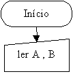
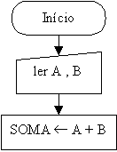
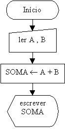
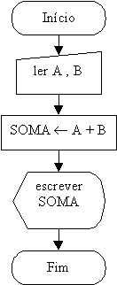

Exemplos Práticos de Construções de Lógicas e Fluxogramas
Exemplo 1:
Um exemplo clássico para o início do aprendizado de programação é a soma de dois números.
Como comentamos anteriormente, a construção da lógica da programação é a elaboração do passo-a-passo para resolver um problema, procurando arrumar sistematicamente todo o processo envolvido até chegar-se ao resultado.
No mundo real fazemos o seguinte:
- Procuramos saber quais são os dois números a serem somados;
- Efetuamos a soma dos dois números e guardamos o resultado em algum lugar(memória, anotamos em um papel etc.);
- Mostramos o resultado a quem possa interessar.
Arrumando os conceitos acima dentro da terminologia da programação, teremos:
Entrada de Dados:
Fornecimento, pelo usuário, dos números que serão somados.
Processamento:
Realização da soma;
Saída de Dados:
Impressão da soma.
Observação
Observe, acima, a importante arrumação do raciocínio em termos de Entradas, Processamento e Saída, com esta análise podemos construir rapidamente o fluxograma:
- Devemos, sempre, indicar o início do fluxograma.
- A seguir temos a entrada de dados, suponhamos que ela será digitada pelo usuário, os valores a serem digitados são desconhecidos, por isso eles devem ser simbolizado por letras:
- Realizamos a soma, o valor desta soma será atribuído à palavra "SOMA", além disto, um cálculo é uma operação interna do computador, por isto é um processamento:
- Em seguida mostramos o resultado no monitor do usuário:
- Indicamos, sempre, o fim do fluxograma.


O símbolo "¬ " indica o que costuma-se chamar de "atribuição de conteúdo", ou seja, a palavra "SOMA" terá o conteúdo indicado pela seta. Neste caso, a palavra "SOMA" passará a conter o valor da soma dos números fornecidos pelo usuário.


Observe que para cada operação(Entrada, Processamento, Saída) há um símbolo adequado e este símbolo também poderá estar ligado à indicação do dispositivo utilizado(teclado, monitor etc.). Ao observar o fluxograma rapidamente podemos detectar o que deverá ser feito para solucionar o problema proposto. Podemos perceber que a arrumação do problema em Entrada, Processamento e Saída facilitou o desenvolvimento da lógica envolvida.
Se você não lembra o significado dos símbolos utilizados, então clique aqui.

| Página Anterior | Próxima Página |